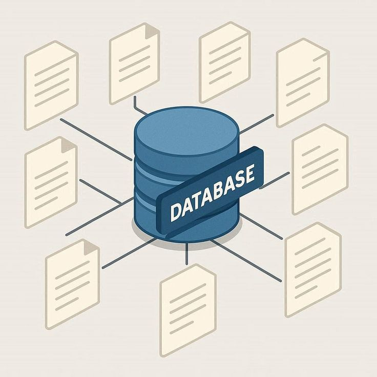
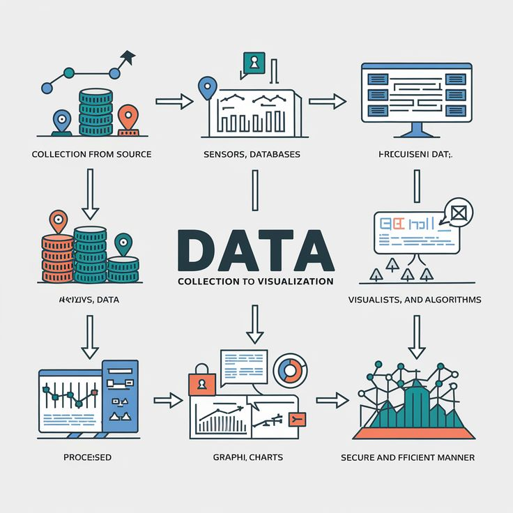
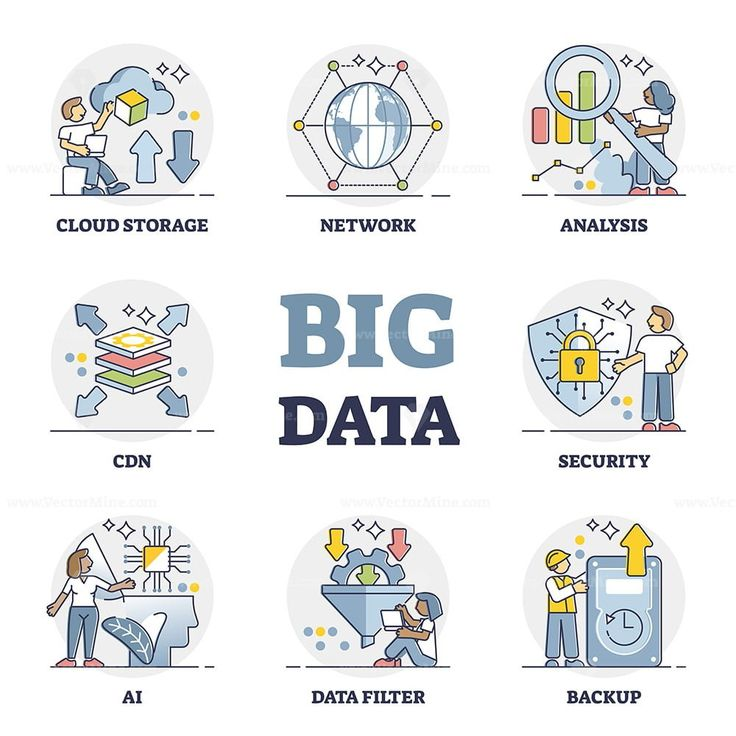

Concepto
¿Qué es una Base de Datos Relacional?
Una base de datos relacional es una colección estructurada de datos organizados en tablas formadas por filas (registros) y columnas (campos). Su magia radica en que permite conectar e interrelacionar la información de diferentes tablas mediante identificadores únicos llamados claves, evitando que los datos se dupliquen de forma innecesaria en el sistema.

¿Cómo funciona el almacenamiento de datos?
El funcionamiento de las bases de datos relacionales se cimienta sobre tres pilares fundamentales:
Tablas y Relaciones: La información se distribuye en entidades lógicas. Por ejemplo, en una universidad existe una tabla para "Estudiantes" y otra para "Cursos", las cuales se vinculan a través de una tabla de "Asignaciones"[cite: 61].
Claves Primarias y Foráneas: Una clave primaria (Primary Key) es el código único irrepetible que identifica un registro (como el número de carné estudiantil). Una clave foránea (Foreign Key) es esa misma clave colocada en otra tabla para crear la unión o enlace entre ambas.
Lenguaje SQL: Es el idioma estandarizado que utilizamos para hablar con el sistema. A través de instrucciones SQL, podemos realizar consultas (SELECT), insertar nuevos datos (INSERT), actualizar registros (UPDATE) o eliminar información (DELETE).
Ventajas de un Sistema Relacional (RDBMS)
Implementar este modelo en el software de cómputo moderno ofrece inmensos beneficios organizativos:
Consistencia e Integridad: Gracias a las reglas de integridad, el sistema garantiza que no existan datos huérfanos; por ejemplo, no se puede inscribir a un estudiante a un curso que no existe en el sistema.
Seguridad Avanzada: Permite gestionar permisos detallados para que solo los usuarios autorizados (como administradores o cajeros) puedan ver o modificar tablas críticas de información.
Consultas Complejas y Eficientes: Permite extraer reportes detallados cruzando información de múltiples tablas simultáneamente de forma veloz gracias al poder de los motores relacionales actuales.

¿Cómo se realiza?
Para construir una base de datos funcional, el ingeniero en sistemas debe guiar el proyecto a través de una arquitectura técnica y una serie de pasos secuenciales para su correcta implementación:
La Arquitectura: El Motor de Base de Datos
Para interactuar con los datos físicos, el software utiliza un sistema intermedio llamado **DBMS (Database Management System)**. Este programa gestiona el almacenamiento en disco y atiende las peticiones del usuario. Dependiendo de los requerimientos de la aplicación, existen diferentes opciones líderes en la industria:
Sistemas Empresariales de Gran Escala: Soluciones robustas como PostgreSQL, MySQL o SQL Server, ideales para sistemas web dinámicos, servidores académicos y empresariales.
Sistemas Ligeros o Embebidos: Motores compactos como SQLite, que se guardan en un solo archivo y son ideales para aplicaciones móviles o proyectos locales sencillos.
El Proceso: Pasos para Diseñar una Base de Datos
1. Análisis de Requerimientos: Consiste en sentarse con el usuario final para entender qué datos necesita almacenar (entidades, atributos y qué relación tienen entre sí).
2. Modelado Entidad-Relación (DER): Se dibuja un mapa gráfico utilizando rectángulos y rombos para representar visualmente cómo se conectarán las tablas antes de escribir una sola línea de código SQL.
3. Creación de las Tablas en SQL (DDL): Utilizando sentencias como CREATE TABLE, se define la estructura en el motor de bases de datos, especificando el tipo de dato de cada columna (números, texto, fechas) y declarando las claves primarias y foráneas.
4. Población y Consumo de Datos (DML): Una vez creada la estructura, la base de datos está lista para recibir registros mediante inserts y ser consumida por las interfaces de software mediante consultas eficientes.
¿Dónde se aplica?
Las bases de datos relacionales sostienen el mundo digital actual. Se aplican de forma crítica en los **sistemas de control académico universitarios** para gestionar notas y asignaciones, en las plataformas de comercio electrónico para controlar inventarios y compras, en la banca digital para asegurar transacciones financieras precisas y en cualquier aplicación móvil que requiera recordar el perfil y credenciales del usuario.

Reflexión Personal
Las bases de datos son mucho más importantes de lo que solemos pensar, nos ayudan a tener programas organizados, estructurales y sobre todo funcionales. Nos ayudan a tener un orden que resulta necesario a la hora de analizar información y tomar decisiones.
Elegí el tema porque me gusta el orden y la organización, y al hacer bases de datos es necesario poder contar con estruscturas organizadas y ordenadas, también por que me parece sorprendente lo mucho que una base de datos puede ayudar a realizar análisis o a encontrar información, creo que el saber hacer buenas bases de datos permite ahorrar tiempo, tomar mejores decisiones a futuro y aumentar la eficiencia con la que se realizan ciertas tareas.